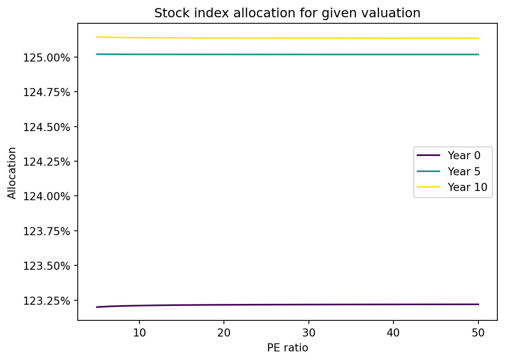
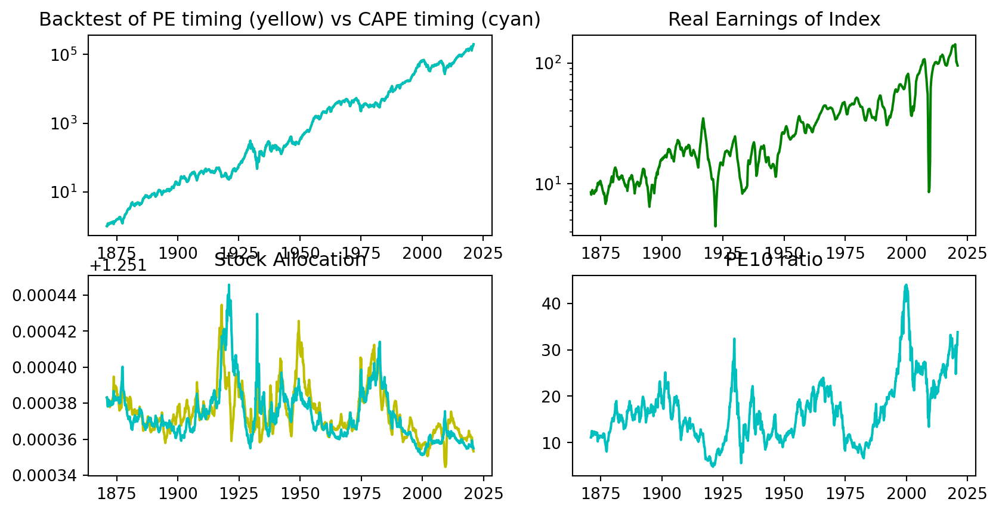

import torch
from torch import nn
class Model(nn.Module):
#Standard NN
def __init__(self):
super().__init__()
self.net = nn.Sequential(
nn.Linear(2,64),
nn.Sigmoid(),
nn.Linear(64, 64),
nn.Sigmoid(),
nn.Linear(64, 1),
nn.Sigmoid() #bounds alloc between 0% and 300% (see final output) as to not short or get too leveraged. This makes simulations / training run smoothly.
)
def forward(self,z):
return 3*self.net(z)
pi_NN = Model()Kelly Optimal In Earnings Driven Financial Market
Abstract
We consider a Kelly Optimal portfolio allocation depending on PE ratio of an underlying stock index. We assume that the earnings of the index as well as the market multiple are exogenous variables described by SDEs. The earnings of the index are driven by a Geometric Brownian Motion, while the market multiple’s inverse, the earnings yield, is driven by an Ornstein-Uhlenbeck process with parameters determined from historical data. We construct the Kelly optimal portfolio through neural networks as well as analytically. The results are back-tested on CAPE and PE ratio data.
The purpose is not to showcase or recommend a strategy that is necessarily good or bad. The purpose is to highlight how neural networks can be used to successfully solve portfolio optimization problems. One could imagine a much more complicated (and more realistic) model for which one could find an optimal portfolio strategy via this approach.
Introduction
We can think of our ownership of a stock at time \(t\) as a claim on the future dividends \((D_s)_{s \geq t}\), where the amount \(D_s ds\) per share is paid to the stockholder’s over time \([s,s+ds]\). This gives a (naive) valuation formula
\[S_t = \int_t^{\infty} \mathbb{E}^Q [ e^{-r(s-t)} D_s ds ],\] where \(Q\) is the risk-neutral measure. The problem is that 1. We don’t know the risk neutral-measure. It would have to be calibrated from market prices. 2. Market preferences for risk vary with time meaning that \(Q\) itself varies with time.
However, we can take this pricing formula as motivation. There are 3 factors that are going to impact the stock return at time \(t\):
- The dividend return
- The change in dividends (i.e. recession / growth). More generally, the probability distribution of future dividends changes as new information is introduced.
- The market value for future dividends (change in multiple). More generally, the change in \(Q\) over time as investors change their risk preferences.
So one component of the return (and the stochastic nature of the stock return) is from directly receiving the random stochastic payments given by the process \((D_t)\).
The second component of return is that this probabilistic future stream of dividends changes over time. That is the outlook changes so the probability distribution of these dividends change as well. This causes a price change as the market reacts to how the dividend changes throughout time.
However, there is a third component to return. Even if the probability distribution of future dividends were not to change over a time interval \([t,t+dt]\), it is still possible that the market is willing to change its mind and pay a different price for this exact same stream of future dividends.
In our model, we will model the first component through the actual payment of dividends, the second component by modelling the dividend process, and the third component by a market multiple process. This corresponds to the three components of total stock return: dividends, dividend growth, and market multiple changes.
Note that a company or stock index may not pay all excess profits or earnings, as dividends. Other options are buybacks, acquisitions, or reinvestment. As for buybacks, we can treat this exactly the same as a reinvested dividend so we can pretend that buybacks are simply a part of the dividend distribution. The other two are not and would affect the dividend growth rate. However, if we assume that acquisitions / reinvestment is done at a similar rate of return as compared to owning the security, we can just assume earnings are just glorified dividends with respect to our model.
From now on, we will treat dividends as earnings. We assume that earnings as a whole are paid out to the investor as if it were a dividend. Afterall the profit at time \(t\) is distributed to shareholders one way or another whether it is dividends, buybacks, aquisitions, or reinvestment. It is dangerous to include all of these as “dividend” payments, however it will be critical to the model.
In this model, we will have a stock index whose profits (or dividends by our assumption) at time \(t\) is given by the process \(D_t\) where \(D_tdt\) represents the total dividend payment in \([t,t+dt]\) for owning \(1\) unit of stock. This dividend process will be given by a GBM with mean \(\mu\) and volatility \(\sigma_D\). Seperately, there is a market multiple process \(M_t\) which represents the amount the market is willing to pay for the stock given its current dividend. Simply, if \(S_t\) is stock price at time \(t\), then \(D_t M_t = S_t\). To model the market multiple process, we model its inverse, the dividend yield process \(y_t = \frac{1}{M_t} = \frac{D_t}{S_t}\) with an OU model, which is common for interest rates. This gives the model
\[\begin{align} dD_t = \mu D_t dt + \sigma_D D_t dW^1_t \\ dy_t = -\theta(y_t-y_{eq})dt + \sigma_y dW^2_t \end{align}\]
We assume for now that the Brownian motions \(W^1,W^2\) are independent although this is not entirely representative of reality. The model parameters \(\mu,\sigma_D,\theta,y_{eq},\sigma_y\) will eventually be calibrated to Shiller’s data for SP500 earnings.
From our exogenous dividend and dividend yield processes, we have an endogenous stock price process as \(S_t = \frac{D_t}{y_t}\). Now we can model our full problem. Let \(X_t\) be the investor’s wealth at time and \(\pi_t\) be the fraction of wealth in which the investor invests in the stock index.
Over time \([t,t+dt]\) the investor will receive dividends equal to the amount of \(\pi_t X_t y_t dt\) as they have \(\pi_t X_t\) invested in the stock which has a dividend yield of \(y_t\). What is meant by dividend yield here is the instantaneous dividend yield. If \(t\) is measured in years where \(t=1\) for instance is 1 year, then the annualized dividend yield. The second aspect of P&L over \([t,t+dt]\) is given by the change in stock price– the price return. The price return consists of price change due to dividend change (i.e. dividend growth) and also market multiple changes. Simply however, we can calculate it as follows. The stock price return is \(\frac{dS_t}{S_t}\) and \(\pi_t X_t\) is invested in the stock so the P&L from stock price change is given by \(\pi_t X_t \frac{dS_t}{S_t}\). Adding these two components of P&L together we get that \(dX_t = \pi_t X_t y_t dt + \pi_t X_t \frac{dS_t}{S_t}\).
Writing this in terms of our exogenous variables \(D_t\) and \(y_t\), we get that the dynamics for the wealth process \(X_t\) are given by:
\[dX_t = \pi_t X_t y_t dt + \pi_t X_t \frac{d(D_t/y_t)}{D_t/y_t}\]
Applying Ito’s lemma, we get that
\[dX_t = \pi_t X_t y_t dt + \pi_t X_t \frac{dD_t}{D_t} + \pi_t X_t \frac{d(1/y_t)}{1/y_t} + \pi_t X_t \frac{dD_t d(1/y_t)}{D_t/y_t} \]
The last term is \(0\) as we assume \(dW^1_t dW^2_t = 0\). Thus we get
\[dX_t = \pi_t X_t y_t dt + \pi_t X_t\frac{dD_t}{D_t} + \pi_t X_t \frac{d(1/y_t)}{1/y_t} \]
Factoring out the total stock allocation \(\pi_t X_t\), we see that this is saying that the return of investing in a stock is given by \[ y_t dt + \frac{dD_t}{D_t} + \frac{d(1/y_t)}{1/y_t}\] which is the dividend yield percent + percent dividend growth rate + percent change in multiple.
Anyway we are concerned with the following problem:
\[\begin{align} dD_t & = \mu D_t dt + \sigma_D D_t dW^1_t \\ dy_t & = -\theta(y_t-y_{eq})dt + \sigma_y dW^2_t\\ dX_t & = \pi_t X_t y_t dt + \pi_t X_t \frac{dD_t}{D_t} + \pi_t X_t \frac{d(1/y_t)}{1/y_t}\\ \end{align}\]
\[\max_{\pi} E[U(X_T)]\]
for some utility function \(U\). We will consider the Kelly optimal portfolio allocation given by taking \(U\) to be \(\log(\cdot)\). This will give the growth optimal portfolio.
Numerical Solution
We wish to numerically approach the stochastic optimal control problem:
\[\begin{align} dD_t & = \mu D_t dt + \sigma_D D_t dW^1_t \\ dy_t & = -\theta(y_t-y_{eq})dt + \sigma_y dW^2_t\\ dX_t & = \pi_t X_t y_t dt + \pi_t X_t \frac{dD_t}{D_t} + \pi_t X_t \frac{d(1/y_t)}{1/y_t}\\ \end{align}\]
\[\max_{\pi} E[U(X_T)].\]
This can be done using neural networks as follows.
First we assume that we are looking for closed loop feedback form controls that is \(\pi_t = \pi(D_t,y_t,X_t,t)\). In other words, we decide our portfolio allocation based on the current state of our wealth, the dividend, and dividend yield, and the current time. Logically, we should expect to see that in reality \(\pi_t = \pi(t,y_t)\). That is the only relevant information to decide the portfolio allocation should be the current time \(t\) (because the model ends at time \(T\)) and the current dividend yield \(y_t\) as we decide whether we think stocks are expensive or not, as well as how important that is to the portfolio allocation. Since we are calculating the expected value of the \(\log(\cdot)\), a myopic utility function, it will turn out the true optimal portfolio does not depend on time \(t\), but only dividend yield \(y_t\). However, for our numerical approach, this is not necessary and we can pretend we did not know any better.
Assuming that these are the only factors that matter, let us look for the optimal control \(\pi_t = \pi(t,y_t)\). We approximate the optimal control by looking for the optimal control in a class of neural networks.
Thus we are solving the following problem. Let \(\pi_{NN}(t,y_t;\theta)\) be a neural network with parameters \(\theta\) that inputs \((t,y_t)\) and maps it to the fraction portfolio allocation to stocks. Then for this \(\pi_{NN}(\cdot,\cdot;\theta)\) we will get a corresponding distribution of final wealth states \(X_T\) for this choice of control. We can then calculate the reward function \(E[log(X_T)]\) for this choice of control and then optimize the control by performing gradient ascent on the reward function.
We will be doing this optimization in PyTorch. First let us create a neural network architecture that takes two inputs \(t\) and \(y\) and has a single real valued output.
With our neural network portfolio control \(\pi_{NN}(t,y_t;\theta)\) defined, let us simulate the dynamics of the wealth process under this choice of portfolio allocation. We will numerically simulate:
\[\begin{align} dD_t & = \mu D_t dt + \sigma_D D_t dW^1_t \\ dy_t & = -\theta(y_t-y_{eq})dt + \sigma_y dW^2_t\\ dX_t & = \pi_{NN}(t,y_t) X_t \bigg(y_t dt + \frac{dD_t}{D_t} + \frac{d(1/y_t)}{1/y_t}\bigg)\\ \end{align}\]
\[\max_{\pi} E[\log(X_T)].\]
Here, the maximum is with respect to the neural networks in our hypothesis class. That is we are finding the neural network parameters \(\theta\) corresponding to a strategy that is close to Kelly optimal (subject to our conditions). We will optimize \(\theta\) by usual gradient descent based training. In our case, we will use the Adam optimization.
import numpy as np
import matplotlib.pyplot as plt
T = 20 #Choice of final time for ODE.
N_steps = 100 #Number of time discretizations of ODE.
N_sim = 2**10 #number of simulations to do in calculating expected log wealth.
N_epochs = 5000
dt = T/N_steps #size of dt for euler scheme
#parameters
#Recallebrate y_eq etc because I dont think it was taken from cont compounded yields
#mu = .01053 #calibrated from real earnings data
mu = .01
sigma_D = .1295 #calibrated from real earnings data
theta = .126 #calibrated from 1/PE 1860-1990
sigma_y = .01288 #calibrated from 1/PE 1860-1990
#y_eq = 0.0783 #calibrated from 1/PE 1860-1990
y_eq = 0.075
opt = torch.optim.Adam(pi_NN.parameters(), lr=.001)
Losses = []
for n in range(N_epochs):
dW1 = torch.randn(N_sim,N_steps)*np.sqrt(dt)
dW2 = torch.randn(N_sim,N_steps)*np.sqrt(dt)
X = np.empty(N_steps+1,'O') #preallocating X. 'O' is so that it stores objects. It will be a numpy array of torch tensors
y = np.empty(N_steps+1,'O')
D = np.empty(N_steps+1,'O')
t = np.empty(N_steps+1,'O')
pi_val = np.empty(N_steps,'O')
X[0] = 1*torch.ones(N_sim).unsqueeze(1) #initial condition represents X(0) = 1. Let's just start with $1
y[0] = (.025*torch.randn(N_sim)+.07).unsqueeze(1).clamp_min(0.005)
D[0] = torch.ones(N_sim).unsqueeze(1)
for i in range(0,N_steps):
t[i] = i*dt*torch.ones(N_sim).unsqueeze(1) #Now, t[i] is the usual time given i steps but stored as a tensor. t is a numpy array of these 1d tensors.
ty = torch.cat((t[i],y[i]),1) #this is (t,y) but as a torch tesnor. We concatenated to tensors into a new one.
#ty = torch.cat((t[i],y[i],D[i],X[i]),1)
pi_val[i] = pi_NN(ty) #we get our current portfolio alloc given this y
#Now we do an ODE step
D[i+1] = D[i] + mu*D[i]*dt + sigma_D*D[i]*dW1[:,i].unsqueeze(1)
y[i+1] = y[i] -theta*(y[i]-y_eq)*dt + sigma_y*dW2[:,i].unsqueeze(1)
y[i+1] = y[i+1].clamp_min(0.005) #make 200 multiple as high as we go.... 0.5% div yield.
X[i+1] = X[i] + pi_val[i]*X[i]*(y[i]*dt + (D[i+1] - D[i])/D[i] + (1/y[i+1] - 1/y[i])*y[i])
X[i+1] = X[i+1].clamp_min(0) #ReLU so that if X is negative it gets replaced by 0
Loss = - sum(torch.log(X[-1]+2**(-52)))/N_sim
Loss.backward()
opt.step()
opt.zero_grad()
Losses.append(Loss.item())
fig, ax = plt.subplots()
ax.plot(Losses, label='Training Loss')
ax.set_title('Training Loss Over Time')
ax.set_xlabel('Epoch')
ax.set_ylabel('Loss')
ax.legend()
plt.show()We note that simulating portfolios has one problem. Although we have defined our portfolio to be one of finite leverage as our neural network output is not allowed to employ over \(300\%\) alloaction to the risky asset, it is still possible that a blow up occurs. To combat this, we employ 1. an adjustment to the earnings yield process that makes it impossible for the stock market to trade above 200x earnings (this will be incorporated in optimal portfolio strategies) 2. an adjustment to wealth such that if the wealth were to go negative, it will remain at \(0\) for all time. This will make the log undefined so we have to add a very small amount \(2^{-52}\) to the loss function so that the log-wealth is always defined even for the trainings which cause wealth to go to \(0\).
With our trained network, we can now see what the Kelly optimal allocation behaves on some generated data. Keep in mind our adjustments to the dynamics mean that this will not exactly be Kelly for our first proposed model, but a slightly altered model.
Code
import matplotlib.ticker as mtick
with torch.no_grad():
# Set the number of seeds to plot
num_seeds = 3
# Set the color map to use for the lines
colormap = plt.cm.viridis
fig, ax = plt.subplots(2, 2, figsize=(9.5, 5.5))
# Loop over the seeds
for seed in range(num_seeds):
# Generate a color for the current seed
color = colormap(seed / num_seeds)
t = np.linspace(0, T, N_steps+1)
x_tens = torch.Tensor(N_steps, N_sim)
torch.stack(list(X), out=x_tens)
x_plt = x_tens.numpy()
ax[1, 0].plot(t, x_plt[:, seed] / x_plt[0, seed], label='Scenario {}'.format(seed+1))
ax[1, 0].set_title("Wealth under Kelly allocation rule")
ax[1, 0].set_ylabel("Wealth (Multiple of Initial)")
ax[1, 0].set_yscale("log")
D_tens = torch.Tensor(N_steps, N_sim)
torch.stack(list(D), out=D_tens)
D_plt = D_tens.numpy()
ax[0, 0].plot(t, D_plt[:, seed], label='Scenario {}'.format(seed+1))
ax[0, 0].set_title("Index Earnings")
ax[0, 0].set_ylabel("Earnings")
y_tens = torch.Tensor(N_steps, N_sim)
torch.stack(list(y), out=y_tens)
y_plt = y_tens.numpy()
ax[0, 1].plot(t, 1/y_plt[:, seed], label='Scenario {}'.format(seed+1))
ax[0, 1].set_title("Index PE Ratio")
ax[0, 1].set_ylabel("PE Ratio")
pi_tens = torch.Tensor(N_steps, N_sim)
torch.stack(list(pi_val), out=pi_tens)
pi_plt = pi_tens.numpy()
ax[1, 1].plot(t[0:-1], pi_plt[:, seed], label='Scenario {}'.format(seed+1))
ax[1, 1].set_title("Kelly Optimal Allocation to Index")
ax[1, 1].set_ylabel("Allocation (%)")
ax[1, 1].yaxis.set_major_formatter(mtick.PercentFormatter(1.0))
for a in ax.flat:
a.set_xlabel("Time (years)") # Set x-label to 'Time' for all subplots
plt.subplots_adjust(hspace=.5)
plt.legend([]) # Remove the legend
plt.show()We see that at higher PE ratios, the Kelly optimal strategy decides to allocate less to the index, while at high PE ratios, the Kelly optimal strategy has a leveraged allocation to the index which is inutitive especially given the model dynamics which models in mean reversion of PE ratios.
Let’s see what the neural network optimal control decides to allocate to equities for a given market multiple. We run this experiment in 3 stages of time. At year 0, at year 5, at year 10.
Code
import matplotlib.ticker as mtick
with torch.no_grad():
pi = []
N_points = 100
for seed in [0,5,10]:
t = (seed)*torch.ones(N_points).unsqueeze(1)
y = torch.linspace(.02,.2,N_points).unsqueeze(1)
ty = torch.cat((t,y),1)
pi.append(pi_NN(ty))
# Set the number of seeds to plot
num_seeds = 5
# Set the color map to use for the lines
colormap = plt.cm.viridis
plt.figure(1)
# Loop over the seeds
for seed in [0,5,10]:
# Generate a color for the current seed
color = colormap(seed / 10)
plt.plot(1/y,pi[int(seed/5)],color=color, label='Year {}'.format(seed))
plt.title('Stock index allocation for given valuation')
plt.xlabel('PE ratio')
plt.ylabel('Allocation')
plt.gca().yaxis.set_major_formatter(mtick.PercentFormatter(1.0))
plt.legend()
Interestingly, we see that the allocation to equities does not depend on time, only PE, as all the curves overlap. Of course we see some differences in the curves, but this because we are approximating the true Kelly optimal with neural networks! Actually, it turns out we can derive the analytical solution for Kelly Optimal in this case.
Analytical Solution
We now present the analytical solution to compare with our trained neural network.
We must solve:
\[\begin{align} dD_t & = \mu D_t dt + \sigma_D D_t dW^1_t \\ dy_t & = -\theta(y_t-y_{eq})dt + \sigma_y dW^2_t\\ dX_t & = \pi_t X_t\bigg(y_t dt + \frac{dD_t}{D_t} + \frac{d(1/y_t)}{1/y_t} \bigg)\\ \end{align}\]
\[\arg \max_{\pi} E[\log(X_T)].\]
We are looking for a Markovian control \(\pi_t = \pi(t,D_t,y_t,X_t)\), but we expect the solution to only depend on \(y_t\) for reasons addressed earlier.
We proceed by considering \(\log(X_t)\). With Ito’s lemma we have that \(d \log(X_t) = \frac{dX_t}{X_t} - \frac{1}{2}\Big( \frac{dX_t}{X_t} \Big)^2\), which gives:
\[d \log(X_t) = \pi_t \bigg(y_tdt + \frac{dD_t}{D_t} + \frac{d(1/y_t)}{1/y_t} \bigg) - \frac{1}{2} \pi_t^2 \bigg( \Big(\frac{dD_t}{D_t} \Big)^2 + \Big( \frac{d(1/y_t)}{1/y_t} \Big)^2 \bigg)\] where we have simplified according to \(dW^1dW^2 = 0\).
Computing some of these terms:
\[\frac{d(1/y_t)}{1/y_t} = \Big( \frac{1}{y_t}\theta(y_t-y_{eq}) + \frac{\sigma_y^2}{y_t^2} \Big)dt - \frac{\sigma_y}{y_t}dW^2_t\]
This gives us:
\[d \log(X_t) = \pi_t \bigg(y_t + \mu + \frac{1}{y_t}\theta(y_t-y_{eq}) + \frac{\sigma_y^2}{y_t^2} \bigg)dt - \frac{1}{2} \pi_t^2 \bigg( \sigma_D^2 + \frac{\sigma_y^2}{y_t^2} \bigg)dt + \ "noise \ terms".\]
Taking integral and then expectation (the integral against noise has expectation 0), we get:
\[\mathbb{E}[\log(X_t)] = \log(X_0) + \mathbb{E} \bigg[ \int_0^T \bigg( \pi_t \Big(y_t + \mu + \frac{1}{y_t}\theta(y_t-y_{eq}) + \frac{\sigma_y^2}{y_t^2} \Big) - \frac{1}{2} \pi_t^2 \Big( \sigma_D^2 + \frac{\sigma_y^2}{y_t^2} \Big) \bigg) dt \bigg].\]
This can be maximized by maximizing the integral pointwise for each \(t\) (it is a concave down parabola in terms of \(\pi\)). Taking the derivative with repsect to \(\pi\) and setting \(=0\), we get
\[\pi^*_t = \frac{y_t + \mu + \frac{1}{y_t}\theta(y_t-y_{eq}) + \frac{\sigma_y^2}{y_t^2}}{\sigma_D^2 + \frac{\sigma_y^2}{y_t^2} }.\]
This can be simplified. However, in this form, we see that the top represents the components of return (return due to yield + dividend growth + mean reversion), while the denominator represents the components of variance (dividend variance + market multiple variance).
As expected, we see that \(\pi^*_t = \pi^* (y_t)\). That is the optimal portolio allocation is decided purely based on the current earnings yield.
Keep in mind the yield here \(y_t\) is a continuously compounded yield. So saying \(y_t = 0.1\) for instance actually corresponds to the annualized rate \(e^{y_t} - 1 = 0.105\)
Code
#Plotting:
def pi_true(M):
y = 1/M
top = y + mu + M*theta*(y-y_eq) + M**2*sigma_y**2
bottom = sigma_D**2 + M**2*sigma_y**2
return top/bottom
def pi_true_adjusted(M):
return np.minimum(pi_true(M),3.0*np.ones(len(M)))
# Set the number of seeds to plot
num_seeds = 5
# Set the color map to use for the lines
colormap = plt.cm.viridis
# Loop over the seeds
t0 = torch.zeros(21).unsqueeze(1) #Choose model for year 0. We showed it didn't matter what year.
y = torch.linspace(.02,.2,21).unsqueeze(1)
ty = torch.cat((t0,y),1)
y_NN = pi_NN(ty)
y_NN = y_NN.detach()
plt.figure(2)
y = np.linspace(.02,.2,21)
plt.plot(1/y,pi_true_adjusted(1/y),'b')
plt.plot(1/y,y_NN,'g')
plt.yticks([0, .5, 1, 1.5, 2,2.5,3], ['0%', '50%', '100%', '150%', '200%', '250%','300%'])
plt.title('Stock index allocation for given valuation')
plt.xlabel('PE ratio')
plt.ylabel('Allocation')Text(0, 0.5, 'Allocation')The cause for differences: in our model, we did not allow the PE ratio to go above 200. We also naturually capped the leverage of the NN based control to be \(300\%\) whereas here we are rounding the true Kelly control to be maxed at \(300\%\) for comparison purposes.
Also we see the bizarre relation where the true Kelly control will start going up at a large enough PE! This is due to a modelling error where we take \(y\) to be given by an OU. The problem is that under the OU model, if we isolate the “change in multiple” component to stock price return, \(\frac{d(1/y_t)}{1/y_t}\), we see that there are problems when \(y_t\) is near \(0\). When \(y_t\) is near \(0\), the change in multiple’s contribution to portfolio return is to have an infinite mean return and infinite variance. This is not true in reality.
\[\frac{d(1/y_t)}{1/y_t} = \Big( \frac{1}{y_t}\theta(y_t-y_{eq}) + \frac{\sigma_y^2}{y_t^2} \Big)dt - \frac{\sigma_y}{y_t}dW^2_t\]
Here we see the mean return and volatility of multiple compression / expansion go to infinity as \(y_t\) goes to \(0\). This causes a model issue that we believe wouldn’t exist in reality. In our model, we actually make PEs max out at 200, which makes the NN allocation control seem more believable (because it was trained on perhaps a slightly more believable model) than the true Kelly.
Backtests
We now perform a backtest of the model.
Code
import pandas as pd
with torch.no_grad():
df = pd.read_excel('PEdata.xlsx',sheet_name='Sheet1',header=None)
PEdata = df[4][5:1805]
TotalReturndata = df[5][5:1805]
IndexRealE = df[6][5:1805]
PE10data = df[8][5:1805]
PE = np.array(PEdata) #now PE contains the trailing 12 month PE for every month at a time from 1860s on
PE = PE.astype(np.float32)
PE = torch.tensor(PE)
PE10 = np.array(PE10data)
PE10 = PE10.astype(np.float32)
PE10 = torch.tensor(PE10)
TR = np.array(TotalReturndata)
TR = TR.astype(np.float32)
TR = torch.tensor(TR)
TR2 = 0*TR
IndexRealE = np.array(IndexRealE)
IndexRealE = IndexRealE.astype(np.float32)
IndexRealE = torch.tensor(IndexRealE)
N_steps = len(TR)
dt = 1/12
T = dt*len(TR)
X = np.empty(N_steps,'O')
X_PE10 = np.empty(N_steps,'O')
t = np.empty(N_steps-1,'O')
pi_val = np.empty(N_steps,'O')
pi_valPE10 = np.empty(N_steps,'O')
X[0] = torch.tensor([1.]).unsqueeze(1) #initial condition represents X(0) = 10. Let's just start with $10
TR2[0] = 1
X_PE10[0] = torch.tensor([1.]).unsqueeze(1) #initial condition represents X(0) = 10. Let's just start with $10
y = (1/PE).unsqueeze(1)
yPE10 = (1/PE10).unsqueeze(1)
for i in range(0,N_steps-1):
t[i] = torch.tensor([10.0]).unsqueeze(1) #always puts it in year 10 since doesn't know how to handle past year 20
ty = torch.cat((t[i],y[i].unsqueeze(1)),1) #always puts it in year 5 since doesn't know how to handle past year 20
tyPE10 = torch.cat((t[i],yPE10[i].unsqueeze(1)),1)
pi_val[i] = pi_NN(ty) #we get our current portfolio alloc given this y
pi_valPE10[i] = pi_NN(tyPE10) #we get our current portfolio alloc given this y
#Now we do an ODE step
r = TR[i+1]/TR[i]-1
X[i+1] = X[i] + r*pi_val[i]*X[i]
X_PE10[i+1] = X_PE10[i] + r*pi_valPE10[i]*X_PE10[i]
TR2[i+1] = TR2[i] + 2*r*TR2[i]Code
with torch.no_grad():
fig, ax = plt.subplots(2, 2, figsize=(9.5, 5.5))
t = np.linspace(2021-T,2021,N_steps)
x_tens = torch.Tensor(N_steps)
torch.stack(list(X),out=x_tens)
x_plt = x_tens.numpy()
x_plt = x_plt[:,0,0]
pi_tens = torch.Tensor(N_steps-1)
torch.stack(list(pi_val[0:-1]),out=pi_tens)
pi_plt = pi_tens.numpy()
pi_plt = pi_plt[:,0,0]
TR = np.array(TR)
TR = TR/TR[0]
startyear = 1871
index_start = int((startyear-1871)/dt)
ax[0,0].set_title('Backtest of optimal portfolio')
ax[0,0].plot(t[index_start:],x_plt[index_start:]/x_plt[index_start],'y',
t[index_start:],TR[index_start:]/TR[index_start],'b')
ax[0,0].set_yscale("log")
ax[0,1].set_title('Real Earnings of Index')
ax[0,1].plot(t[index_start:],IndexRealE[index_start:],'g')
ax[0,1].set_yscale("log")
PE = np.array(PE)
ax[1,1].set_title('PE ratio')
ax[1,1].plot(t[index_start:],PE[index_start:],'r')
plt.figure(4)
ax[1,0].set_title('Stock Allocation')
ax[1,0].plot(t[index_start:-1],pi_plt[index_start:],'m')
plt.subplots_adjust(hspace=.5)
plt.show()<Figure size 672x480 with 0 Axes>Code
with torch.no_grad():
fig, ax = plt.subplots(2, 2, figsize=(10, 5))
t = np.linspace(2021-T,2021,N_steps)
X_PE10_tens = torch.Tensor(N_steps)
torch.stack(list(X_PE10),out=X_PE10_tens)
X_PE10_plt = X_PE10_tens.numpy()
X_PE10_plt = X_PE10_plt[:,0,0]
startyear = 1871
index_start = int((startyear-1871)/dt)
piPE10_tens = torch.Tensor(N_steps-1)
torch.stack(list(pi_valPE10[0:-1]),out=piPE10_tens)
piPE10_plt = piPE10_tens.numpy()
piPE10_plt = piPE10_plt[:,0,0]
TR = np.array(TR)
TR = TR/TR[0]
ax[0,0].set_title('Backtest of PE timing (yellow) vs CAPE timing (cyan)')
ax[0,0].plot(t[index_start:],x_plt[index_start:]/x_plt[index_start],'y',
t[index_start:],X_PE10_plt[index_start:]/X_PE10_plt[index_start],'c')
ax[0,0].set_yscale("log")
ax[0,1].set_title('Real Earnings of Index')
ax[0,1].plot(t[index_start:],IndexRealE[index_start:],'g')
ax[0,1].set_yscale("log")
PE10 = np.array(PE10)
ax[1,1].set_title('PE10 ratio')
ax[1,1].plot(t[index_start:],PE10[index_start:],'c')
plt.figure(4)
ax[1,0].set_title('Stock Allocation')
ax[1,0].plot(t[index_start:-1],pi_plt[index_start:],'y',t[index_start:-1],piPE10_plt[index_start:],'c')
plt.subplots_adjust(hspace=.5)
plt.show()
<Figure size 672x480 with 0 Axes>Code
plt.figure(1,(9.5,5))
plt.title('Backtest of PE timing (yellow) vs CAPE timing (cyan) and 2x leveraged (blue)')
plt.plot(t[index_start:],x_plt[index_start:]/x_plt[index_start],'y',
t[index_start:],X_PE10_plt[index_start:]/X_PE10_plt[index_start],'c',
t[index_start:],TR2[index_start:]/TR2[index_start],'b')
plt.yscale("log")
plt.show()